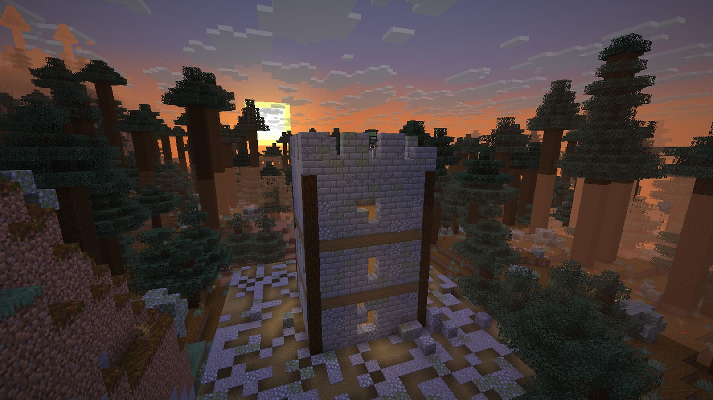

 Full Draw
Full Draw
Archery where the shot is yours: time the release, aim for the head, pick the right bow and the right arrow.
Modpack makers: use the CurseForge download. GitHub Releases is for manual installs and testing.
5new bows and crossbows
6new arrows, fletched
4new creatures, the Marksman among them
4enchantments
How it plays
- Time the release. Bows now have a Perfect window: a moment just after full draw, 0.2 s long (0.3 s on the Recurve Bow). Let go while the ring around the crosshair glows gold and the arrow flies true and crits. A plain full draw no longer crits.
- Aim for the head. A hit on a mob's head or weak spot does ×1.5 damage (×1.25 on a player), with a heavier sound and a red tick on the crosshair.
- Pick the bow. Shortbow, Longbow and Recurve; the Arbalest and the Repeating Crossbow. Each has a job and a weakness.
- Pick the arrow. Fletch Broadhead, Bodkin, Blunt, Rope, Flare and Blast arrows at the Fletching Table, and switch between them from a Quiver.
- Win the duel. Shieldbearers, Gale Harriers and Bog Lurkers each ask for a different shot, and the Marksman waits on its watchtower.
The full guide has every number.
Screenshots


Other mods' bows too
The shot rules apply to vanilla's bow and to other mods' bows that fire the way vanilla's does, so such a bow gets a Perfect window, headshots and range from the first day. A bow that fires its own way is left as its mod made it, and a pack can leave any weapon alone with one item tag (for pack makers). Mobs' own arrows are untouched: skeletons and pillagers hit as they always have.
Requirements
- Minecraft 26.3, Java 25.
- NeoForge 26.3.0.89 or later. Nothing else is needed.
- Fabric: Fabric Loader 0.19.5 or later and Fabric API 0.161.0+26.3 or later. Nothing else is needed.
- Install it on the client, and on the server too when you play on one.